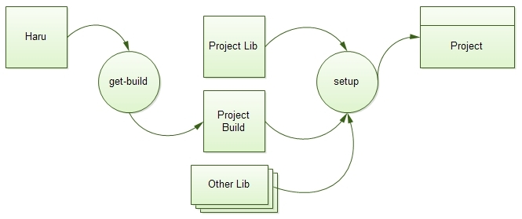
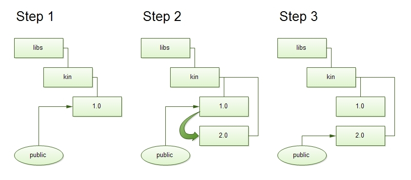
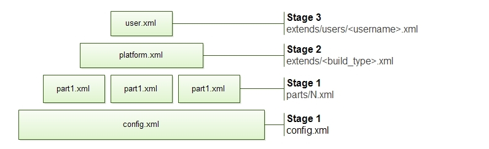

Описание
Универсальный автосборщик. Набор инструкций для Phing, предназначенный для автоматизации сборки и установки проектов.
Требования к ПО
PHP >= 5.3
Установка
Скачайте и распакуйте архив необходимой версии программы Haru
Или
Скопируйте репозиторий
git clone git://github.com/TheRatG/haru.git
Быстрый старт
Выполните следующие команды:
git clone git://github.com/TheRatG/haru.git cd haru ./phing born -Dpath=/www/kin -Dhost=kin.dv -Dlib=kin -Dget-build.deploy.setup=1
Учебный проект готов
Для запуска сайта настройте виртуальный хост:
## создайте ссылку на кофигурационный файл для apache ## например sudo ln -s /www/kin/etc/kin.conf /usr/local/apache2/conf.d/kin.conf
Функциональные возможности
Выделяются две группы функций: операции (targets), выполняемые непосредственно в папке haru (in haru), и операции, выполняемые в папке build проекта (in project build). Так как проект использует Phing, то соответственно Haru наследует все возможности родителя.
-
создание учебного проекта, основанного на miao
-
создание учебного проекта с инициализацией репозиториев
-
установка проекта, при помощи project build
-
установка проекта
-
конфигуририрование проекта
-
управление симлинками == Основные понятия и жизненный цикл проекта
Под проектом (project) понимается совокупность проектных библиотек (libs), хранящиеся в репозитории и проектной сборки (project_build).
При установке проекта (setup) при помощи Haru (команда get-build) создается директория, в которую складывается проектная сборка (project_build), и при помощи настроек этой сборки устанавливаются необходимые библиотеки, конфигурируется проект.
-
Haru - главные инструкции по установке проекта
-
projeсt_build - свойства проекта и дополнительные инструкции phing
-
project_lib - проектная библиотека содержит необходимые директории и код, который хранится в репозитории
-
project - "установленный" на платформе программный продукт

Циклы
Создание проекта
Создаем проект и сохраняем его в репозиторий для совместной разработки, возможно нам понадобится отменить правку. Каждый разработчик работает со своей копией проекта, либо один и тот же человек за разными компьютерами.
Установка/выкат (deploy) проекта
При установке проекта мы указываем каталог хранения, помимо этого нам обычно необходимо изменить множество параметров проекта (конфигурационные данные). Например: путь до исполняемого файла php, параметры соединения к БД, опции php.ini, имя тега/бранча lib.
Эти параметры зависят от типа платформы (на test одни параметры подлючения, на develop другие). Помимо свойств зависящих от платформы имеется возможность расширить свойства пользовательским файлом. В частности, это очень полезно для develop платформы, когда над одним проектом работают несколько разработчиков.
Установка новой версии продукта происходит так: - загружаются новые версии библиотек (lib) в отдельную директорию - генерируются файлы из шаблонов - переключаются symlink - в случае, если нужно отменить выкат новой версии, переключаем symlink

|
Note
|
Вопрос: Почему symlink, а не просто обновление репозитория? Ответ: Так как помимо кода хранящегося в репозитории в папке библиотеки проекта хранятся файлы сгенеренные из шаблонов. Также обновление может занимать длительное время, переключение symlink работает быстрее. |
Разработка
Разработчик имеет свою копию проекта. Настройки (конфигурационные данные) собственной копии расширяются в пользовательском файле build/properties/extends/users/<username>.xml, которые не сохраняются в репозиторий, так как содержит некоторые конфиденциальные данные.
Для разработки обычно создают отдельную ветку проекта (branch). После создания ветки, необходимо внести изменения в пользовательский файл настроек и переустановить проект. == In Haru Описываемые команды являются командами вне проектов, запускаются в директории haru. Опции указываются с префиксом -D, например чтобы передать опцию path, необходимо написать -Dpath=/www
Born
$ ./phing born # - создание учебного проекта
-
path - директория где будет располагаться файлы учебного проекта
-
lib - наименование библиотеки проекта
-
host - хост проекта
Пример. Создать проект в директории /www/kin, который будет доступен по адресу http://kin.dv
$ cd /www/haru $ ./phing born -Dpath=/www/kin -Dhost=kin.dv -Dlib=kin $ ln -s /www/kin/etc/kin.conf /usr/local/apache2/conf.d/kin.conf # пример настройки виртуального хоста apache
|
Note
|
Если параметры не указаны они будут запрошены из консоли (promt). |
Born Repo
Тоже что и born, добавляются операции по инициализации репозиториев для project_build и вашей библиотеки libs/<lib_name>/<branch>. Используется в случае, если вы захотите развивать созданный проект дальше :).
Пример.
$ ./phing born-repo -Dhbt=svn -Dhbu=https://github.com/<user>/<project_build>.git \ -Dlt=svn -Dlu=https://github.com/<user>/project.git \ -Dpath=/www/<project> -Dhost=<project_host> -Dlib=<project> $ ln -s /www/kin/etc/<project>.conf /usr/local/apache2/conf.d/<project>.conf \ # пример настройки виртуального хоста apache
Далее добавить файлы в репозиторий, сохранить.
Get Build
Устанавливает проект при помощи project_build. Создает необходимые директории, cкачивает project_build из указанного репозитория, и запускает сборку проекта, после вашего подтверждения.
-
vcs - тип репозитория (svn|git|hg)
-
src - url репозитория
-
path - директория где будет располагаться файлы учебного проекта
-
lib - наименование библиотеки проекта
-
host - хост проекта
Пример.
Установить проект в директории /www/<project>, который будет доступен по адресу http://<project_host>, при помощи проектной сборки, находящейся по адресу git://github.com/<user>/<project_build>.git
$ cd /www/haru $ ./phing born -Dvcs=git -Dsrc=git://github.com/<user>/<project_build>.git \ -Dpath=/www/<project> -Dhost=<project_host> -Dlib=<project> $ ln -s /www/kin/etc/<project>.conf /usr/local/apache2/conf.d/<project>.conf \ # пример настройки виртуального хоста apache
In Project Build
Команды отвечающие за установку проекта. Инструкциями для команд являются свойства проекта.
-
bt - build type, тип платформы (D|T|P), develop, test, production. Расширяет свойства соответствующими файлами из директории properties/extends/
-
bu - имя пользователя, расширяет свойства соответствующим файлом из директории properties/extends/users/
|
Note
|
По умолчанию подставляются опции: -Dbt=D -Dbu=<user> |
Install
$ <project_root>/build/bin/phing install
Создание минимально необходимых директорий и скачивание необходимых библиотек. При повторном запуске команды обновляет имеющиеся репозитории, если свойства изменились, докачивает необходимое. Поддерживает выгрузку из репозиториев SVN, Git, Mercurial.
Configure
$ <project_root>/build/bin/phing configure
Создает дополнительные директории, генерирует файлы из шаблонов, создает конфигурационные файлы для проекта и библиотек (lib).
Параметры генерация файлов из шаблонов описываются в специальной секции библиотеки. Сгенеренные файлы: различные скрипты запуска консольных приложений, конфигурационные файлы настройки виртуального хоста, конфиг sphinx и многое другое. В шаблонах файлах используются обратные ссылки из свойств проекта.
source cron.sh.tpl:
#!/bin/bash ${system.bin.php} ${paths.scripts}/cron.php --quiet
result cron.sh:
#!/bin/bash /usr/local/bin/php /www/myproject/scripts/cron.php --quiet
Link
$ <project_root>/build/bin/phing link
Создает symlinks для проекта. При помощи symliks переключаемся между версиями проекта. Симлинки нужны для настройки виртуального хоста, и крон-скриптов.
|
Warning
|
Не злоупотребляйте symliks, по возможности используйте в скриптах абсолютные пути. |
Дополнительные инструкции
Каждую из команд можно дополнить своими инструкциями phing, которые выполняются до (before) или после (after) запуска команды. Для этого необходимо внести изменения в одноименные файлы в директории <project_root>/build/targets. Используется для запуска дополнительных операций необходимых для установки проектов.
Необходимо запустить скрипт сжатия js-скриптов, после конфигурирвоания проекта (configure).
Редактируем файл <project_root>/build/targets/configure.xml, добавляем в цель (target) configure-after свои инструкции.
<?xml version="1.0" encoding="UTF-8"?> <project default="help"> <target name="configure-before"> <echo>custom project actions _before_ configure</echo> </target> <target name="configure-after"> <echo>custom project actions _after_ configure</echo> <!-- run minify --> <exec command="<project_root>/scripts/minify.php" checkreturn="1" /> </target> </project>
Одним из приемов использования является запуск своих инструкций (build.xml - phing), например хранящиеся в директории библиотеки.
<!-- file: <project_root>/build/targets/configure.xml --> ... <target name="configure-after"> <phing phingfile="<project_root>/lib/<project>/<branch>/build/configure.xml" target="main" haltonfailure="true"> </target> ...
Свойства проекта
Свойства проекта хранятся в директории build/properties и имеют иерархическую структуру. Является мета-языком для phing, обрабатываются специальными тасками.
Иерархия
"Низы" меняются следом за "верхами"

Первая ступень
Общие свойства build/properties/config.xml. Содержит системные настройки, например: корневая директория проекта, наименование виртуального хоста, путь к исполняемым файлам. И файлы находящиеся в директории build/properties/parts/*.xml, сделаны для разделения файла config.xml на части для удобного редактирования.
|
Note
|
Файлы из директории parts используются для физического разделения ветвей xml, в отличии от других ступеней, где свойства заменяются. |
<!-- пример build/properties/config.xml --> <?xml version="1.0" encoding="UTF-8" ?> <config> <project_name>kin</project_name> ... <paths> <root></root> <public>${config.paths.root}/public</public> <protected>${config.paths.root}/protected</protected> ... </paths> <hosts> <root></root> <public>${config.hosts.root}</public> ... </hosts> <system> <username></username> <bin> <php>php</php> ... </bin> </system> <libs></libs> </config>
<!-- пример build/properties/parts/miao.xml --> <?xml version="1.0" encoding="UTF-8" ?> <config> <libs> <Miao> <plugin>Standart</plugin> <deploy> ... </config>
Вторая ступень
Расширение настроек в зависимости от платформы. Файл выбирается на основании параметра bt (build type) при запуске установки проекта. Может быть трех типов develop (D), test (T), production (P). Пример запуска команды ./build/bin/phing install -Dbt=T
Данные настройки имеет приоритет выше, чем у свойств первой ступени, соответственно параметры перекрываются второй ступенью. Сюда складываются свойства типа: подлючения к БД, пользователь репозитория на test, production платформы.
Третья ступень
Пользовательские настройки. Данный файл, например build/properties/extends/users/vpak.xml, содержит личные настройки и не сохраняется в репозитории.
Имеет высший приоритет перед остальными ступенями.
Для чего нужна иерархия?
Перекрытие свойств - удобный трюк для хранения параметров проекта. Он позволяет сократить количество параметров в файлах расширениях. Ступенчатость (разделение по директориям extends, parts) упорядочивает структуру файлов. Данный прием используется в Zend_Config и Ant.
В конце концов при установке проекта файлы расширений собираются в один большой конфигурационный файл 'build/tmp/configs/config.xml ', который используется в сборке проекта.
Синтаксис
Файлы свойств имеют расширение xml, поэтому необходимо соблюдать правила форматирования xml. Помните, если свойство содержит спецсимволы, оборачивайте значение тега в CDATA. .Пример
...
<property><![CDATA[something with & "" ']]></property>
...Обратные ссылки
Можно получить значение свойства по указанному пути. Переменная заключается в ${}, путь разделяется ..
<!-- Source --> <config> <dir>/www/dir</dir> <file>file.xml</file> <fullname>${config.dir}/${config.file}</fullname> <!-- в качестве секции пути можно использовать переменную --> <example> <prop1>prop2</prop1> <prop2>value2</prop2> <prop3>${config.example.${config.example.prop1}}</prop3> </example> </config> <!-- Result --> <config> <dir>/www/dir</dir> <file>file.xml</file> <fullname>/www/dir/file.xml</fullname> <!-- в качестве секции пути можно использовать переменную --> <example> <prop1>prop2</prop1> <prop2>value2</prop2> <prop3>value2</prop3> </example> </config>
Атрибуты
Возможно использования атрибутов.
|
Important
|
Атрибуты подтягиваются только если тэг без вложенных тэгов. |
Запись source:
<config> <item name="1"></item> <item name="2"></item> </config>
Будет эквивалентна result:
<?xml version="1.0" encoding="UTF8"?> <config> <item> <name>1</name> </item> <item> <name>2</name> </item> </config>
Перекрытие свойств
Свойства по одинаковуму xpath перекрываются.
имеется два файла config.xml и develop.xml, объединим их.
file: config.xml
<?xml version="1.0"?> <root> <a>old</a> </root>
file: develop.xml
<?xml version="1.0"?> <root> <a>new</a> </root>
result:
<?xml version="1.0"?> <root> <a>new</a> </root>
Пример слияния веток с одинаковыми именами (config.xml merge develop.xml).
file: config.xml
<?xml version="1.0"?> <root> <item>1</item> <item>2</item> <item>3</item> </root>
file: develop.xml
<?xml version="1.0"?> <root> <item>a</item> <item>b</item> </root>
result:
<?xml version="1.0"?> <root> <item>a</item> <item>b</item> <item>3</item> </root>
Секции
Корневым элементом xml является тег config.
-
paths содержит определения абсолютных путей жизненно важных директорий
-
libs содержит свойства библиотек
-
system используетя для описания настроек операционной системы
-
hosts складываем определение доменных имен
<?xml version="1.0" encoding="UTF-8" ?> <config> <project_name>kin</project_name> <paths> <root></root> <public>${config.paths.root}/public</public> ... <tmp>${config.paths.root}/tmp</tmp> <logs>${config.paths.tmp}/logs</logs> </paths> <hosts> <root></root> </hosts> <system> <username></username> <bin> <python>python</python> <php>php</php> ... </bin> </system> <libs> ... </libs> </config>
Libs
В секции libs описаны библиотеки проекта, данные свойства выделяются в отдельные файлы в директории parts.
Пример части файла build/properties/parts/miao.xml
<?xml version="1.0" encoding="UTF-8" ?> <config> <libs> <Miao> ... </Miao> </libs> </config>
Далее будет рассматриваться секции внутри библиотеки.
Deploy
Секция deploy описывает настройки необходимые команде install.
-
type - тип репозитория (none|svn|git|hg)
-
tag - названия бранча или тега (только для svn)
-
src - ссылка репозитория
-
dst - куда будут выгружены файлы из репозитория
-
current - имя symlink на текущую версию библиотеки
-
username - имя пользователя репозитория
-
password - парольк репозитория
Configure
-
depends - содержит описание зависимостей Пример, проект использует библиотеки PHPUnit, Zend.
<depends> <item>PHPUnit</item> <item>Zend</item> </depends>
-
dirs - описание создаваемых директорий, состоит из item. Вложенные теги: dir - абсолютный путь папки, mode - права доступа.
<dirs> <item> <dir>data</dir> <mode>777</mode> </item> ... </dirs>
-
files - генерация файлов из шаблонов, состоит из item. Вложенные теги: src - абсолютный путь к файлу шаблона, dst - файл назначения, mode - права доступа.
Пример.
... <files> <item> <src>${config.paths.build}/templates/scripts/setenv.sh.tpl</src> <dst>${config.paths.scripts}/setenv.sh</dst> <mode>0555</mode> </item> ... ...
Link
Описание создаваемых symlink, при выполнение команды link. Состоит из item: src - абсолютный путь к файлу, dst - symlink.
...
<item>
<src>${config.libs.Kin.deploy.dst}/modules/FrontOffice/public</src>
<dst>${config.paths.root}/public</dst>
</item>
...